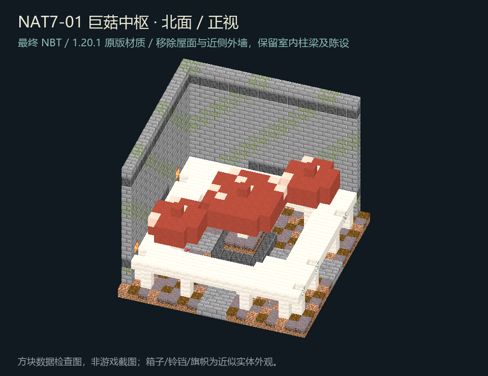
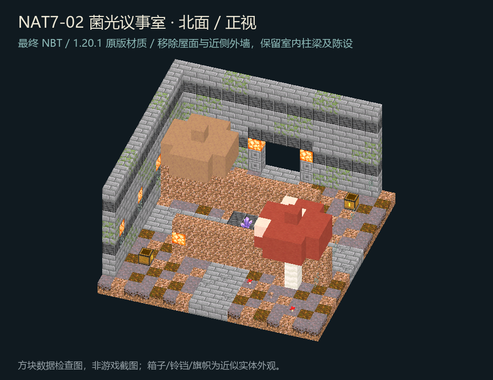
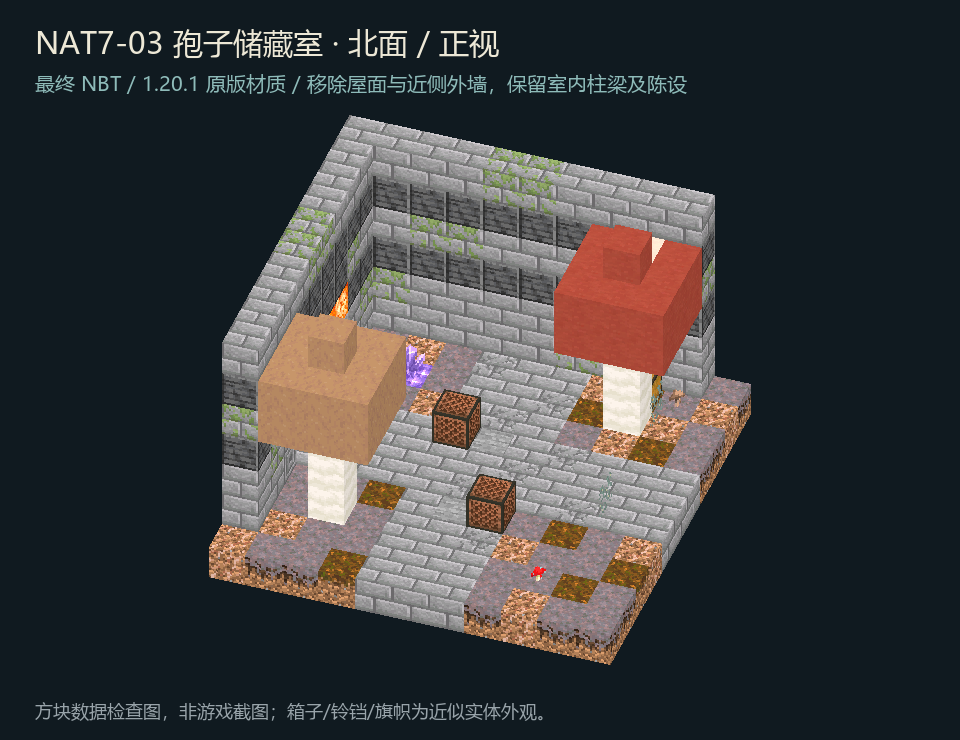
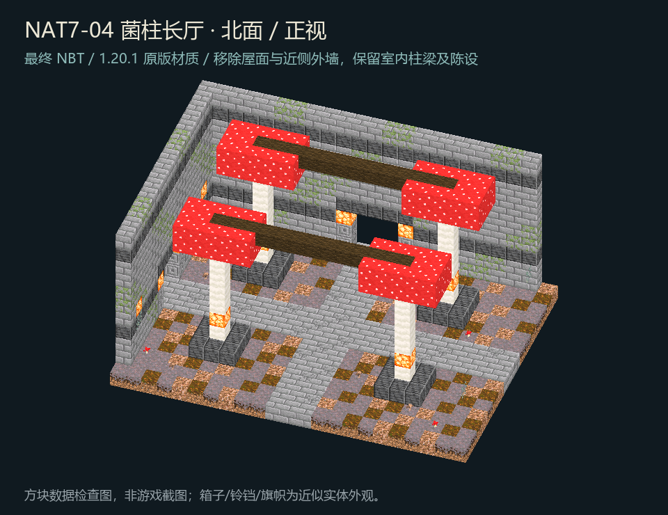
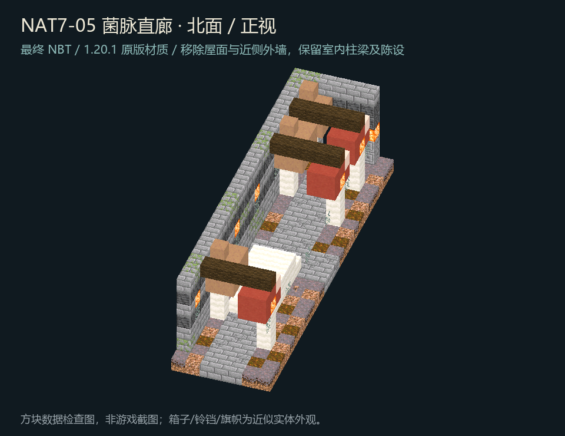
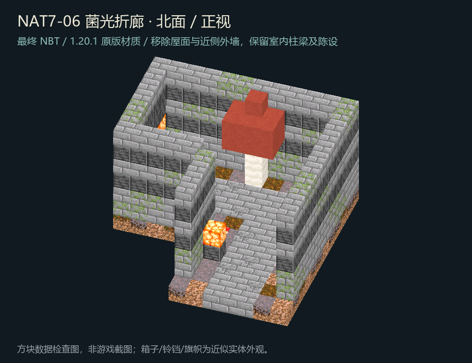
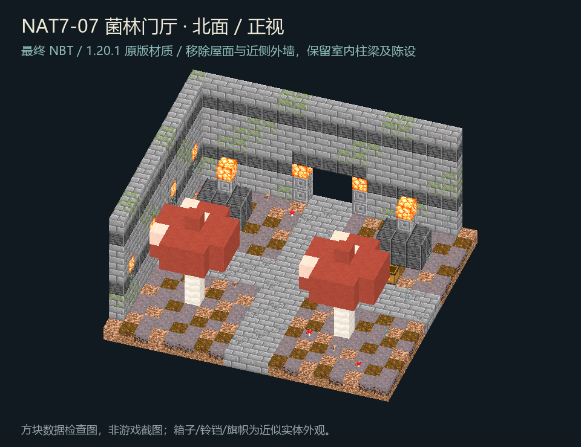
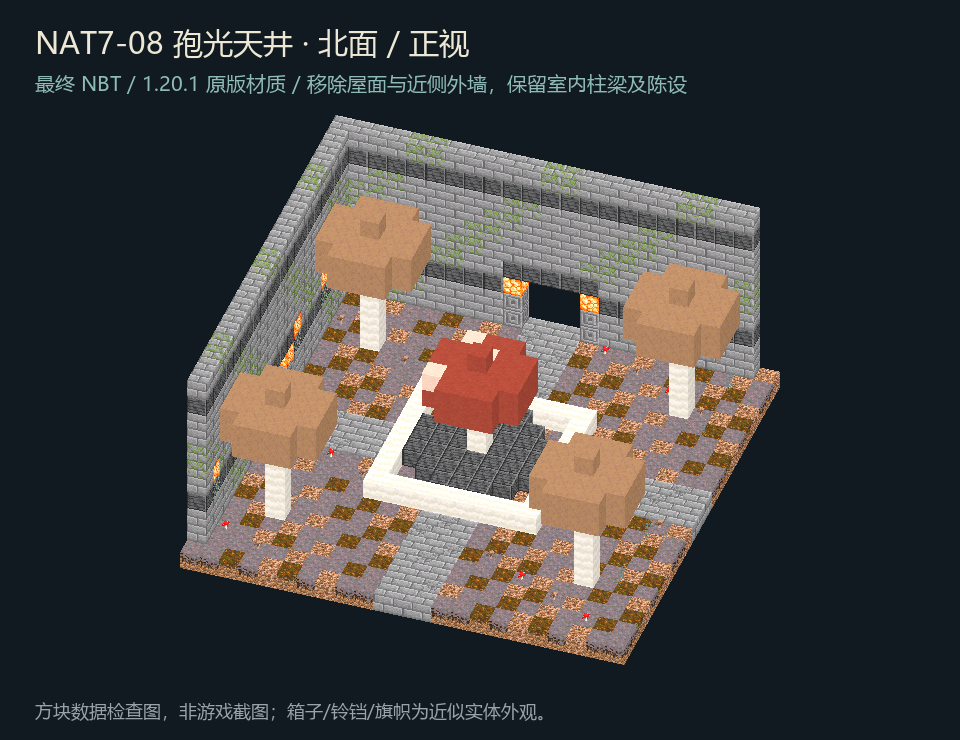
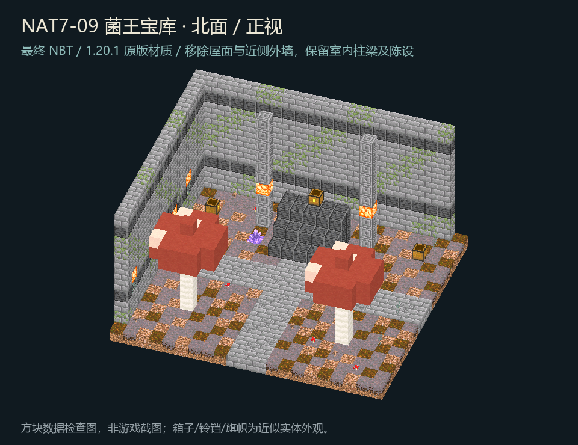

NAT7-01 巨菇中枢
19 × 16 × 19
打开 Lodestone 交互预览先运行 Start-LodestonePreview.ps1。图片为最终NBT剖视；交互预览仅显示模板，不执行玩法。

19 × 16 × 19
打开 Lodestone 交互预览
17 × 10 × 17
打开 Lodestone 交互预览
11 × 8 × 11
打开 Lodestone 交互预览
23 × 12 × 17
打开 Lodestone 交互预览
7 × 8 × 25
打开 Lodestone 交互预览
17 × 8 × 17
打开 Lodestone 交互预览
19 × 10 × 17
打开 Lodestone 交互预览
23 × 12 × 23
打开 Lodestone 交互预览
21 × 12 × 19
打开 Lodestone 交互预览